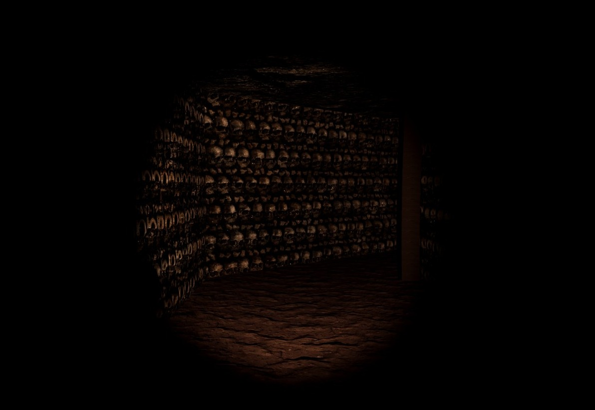

Disponível em breve
PC
Catacumbas de Paris
Um grupo de seis artistas parisienses decide explorar o GRS em busca de inspiração perturbadora. Durante a incursão às Catacumbas de Paris, Henry, o mais medroso, tenta voltar, mas a entrada desmorona, prendendo-o. Sozinho, ele encontra o alojamento dos amigos em completo caos, paredes marcadas, suprimentos espalhados e sangue pelo chão. Uma dúvida sombria surge em sua mente: o que realmente é esse lugar?
Protagonista
Henry, um jovem e promissor artista, forma um grupo com seus colegas universitários em busca de revolucionar a arte conhecida. Buscando personificar a angustia e o medo, procuram por histórias na Biblioteca Nacional da França. Henry é atrapalhado, considerado desnutrido pelos seus amigos e medroso, ele tenta evitar ao máximo qualquer situação desconfortante.
Artistas
Robert: Amigo de infância do Henry, adora poesia, muito enérgico e sempre está usando um suspensório.
Margot: Uma senhorinha falante que se enturmou com Henry e seus amigos, em busca de mostrar suas habilidades como escultora.
Maxime: Um pintor que busca sempre ser o melhor, desde o dia que Henry e ele se conheceram ele tem uma mancha de tinta em suas roupas.
Sophie: Fotógrafa sensação, ruiva e apaixonada em algo aterrorizante.
Pierre: Marido da Margot, compositor que busca se reinventar artisticamente.
O grupo é formado por seis jovens artistas universitários, cada um com uma especialidade distinta. Eles compartilham o objetivo comum de revolucionar a arte conhecida, buscando inspiração em histórias obscuras e perturbadoras. Cada membro do grupo traz uma perspectiva única para a busca artística, contribuindo com suas habilidades e visões individuais.
Inimigos
História
Seis artistas parisienses, movidos pela busca de inspiração em histórias perturbadoras, descobrem referências ao GRS, uma área selada e esquecida nas profundezas das Catacumbas de Paris. Fascinados pelo mistério, eles decidem explorar o local em segredo.
Entre eles está Henry, o mais medroso, que sente uma estranha aversão ao ambiente e tenta voltar. Porém, um desmoronamento bloqueia a saída, deixando-o preso no subsolo. Isolado encontra o alojamento dos amigos destruído e uma assombração enigmática.
A partir de documentos e aparições, Henry descobre que o local era um antigo culto que abriu um portal sugador de almas corrompidas, parcialmente selado, mas agora rompido pelos artistas. Criaturas perigosas vagam pelo GRS, e Henry precisa sobreviver, fugir e encontrar quatro pedras para fechar o portal antes que seja tarde.